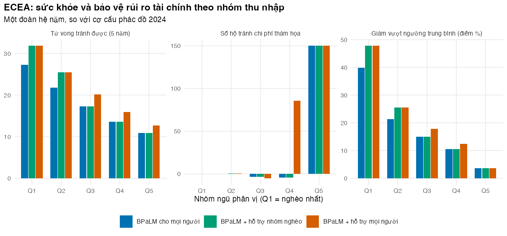

# Vietnamese text in tables and figures needs a UTF-8 locale (Rscript may start in "C")
if (!isTRUE(l10n_info()[["UTF-8"]])) invisible(Sys.setlocale("LC_CTYPE", "en_US.UTF-8"))
source("../_shared/R/helpers.R")
source("../_shared/R/vn_data.R")
source("../m02-cohort-markov/code/model.R")
source("code/model.R")
library(ggplot2)
p02 <- m02_params("../m02-cohort-markov/params/mdrtb.csv")
pb <- read_params("params/bia.csv")
pe <- read_params("params/equity.csv")
ctx <- vn_context()
ptab_eq <- attr(pe, "table")
n_patients <- sum(current_counts(pb))
mix <- current_mix(pb)
pp <- patient_outcomes(p02, pe, mix) # per-patient results; attr(pp, "paths") = treatment pathways
paths <- attr(pp, "paths")
types <- c("now", "long", "short", "bpalm", "bpalm_cash")Bài 3: Phân tích chi phí-hiệu quả mở rộng (ECEA) và bảo vệ rủi ro tài chính
Ước tính theo nhóm thu nhập: tử vong tránh được, chi phí hộ gia đình giảm và chi phí thảm họa tránh được
Vì sao bạn nên quan tâm?
Khi một người trong nhà mắc lao kháng thuốc, gia đình mất thu nhập của người bệnh, thường cả người chăm sóc, cộng tiền đi lại, ăn uống bồi dưỡng và chỗ ở gần bệnh viện. Khảo sát quốc gia năm 2016 ghi nhận trung bình mỗi đợt lao đa kháng một hộ tốn US$4,302 (Nhung và c.s. 2018), quy về giá năm 2025 khoảng 125 triệu VNĐ: bằng 15 tháng thu nhập bình quân của một người lao động (Cục Thống kê (Bộ Tài chính) 2026), tức hơn một năm làm việc không nghỉ. Cùng khảo sát đó, 63% hộ có người bệnh lao gặp chi phí thảm họa. Rút phác đồ từ 18 tháng xuống 6 tháng có bảo vệ được các hộ này không, và bảo vệ hộ nào? Bài này dựng một phân tích chi phí-hiệu quả mở rộng để trả lời theo từng nhóm thu nhập.
Mục tiêu học tập
Sau bài này, bạn có thể:
- Kể bốn lĩnh vực kết quả của phân tích chi phí-hiệu quả mở rộng (extended cost-effectiveness analysis, ECEA) và giải thích vì sao ECEA hợp với chính sách công ở nước thu nhập thấp và trung bình.
- Định nghĩa và tính các chỉ số bảo vệ rủi ro tài chính (financial risk protection, FRP): chi phí hộ gia đình giảm, tỷ lệ hộ gặp chi phí thảm họa và mức vượt ngưỡng trung bình; mô tả giá trị bảo hiểm quy ra tiền.
- Dựng một phân phối thu nhập hộ gia đình theo nhóm ngũ phân vị từ số liệu công bố, và chi phí người bệnh theo cách điều trị kết thúc.
- Lập và đọc một bảng ECEA theo nhóm thu nhập cho các chiến lược điều trị lao đa kháng/kháng rifampicin (MDR/RR-TB), và nói rõ kết quả phụ thuộc giả định nào.
Ý chính
- ECEA đặt cạnh nhau bốn lĩnh vực kết quả: sức khỏe, bảo vệ rủi ro tài chính, chi phí cho nhà nước, và phân bố theo nhóm thu nhập (Verguet, Kim, và Jamison 2016). Kết quả là một “bảng điều khiển”, không phải một tỷ số duy nhất.
- Với lao, chi phí thảm họa là tổng chi phí người bệnh (trực tiếp và mất thu nhập) vượt 20% thu nhập hộ hằng năm (Nhung và c.s. 2018); chiến lược End TB đặt mục tiêu không hộ nào phải chịu chi phí thảm họa do lao (World Health Organization 2017).
- Tỷ lệ hộ gặp chi phí thảm họa (headcount) bão hòa ở nhóm nghèo: khi mọi hộ đã vượt ngưỡng, giảm chi phí không làm giảm tỷ lệ này. Cần thêm một chỉ số cường độ, như mức vượt ngưỡng trung bình (Wagstaff và Doorslaer 2003).
- Ngưỡng là hàm phi tuyến, nên không thể lấy chi phí trung bình rồi đếm hộ: cần chi phí theo từng cách điều trị kết thúc (hoàn thành, bỏ điều trị, tử vong, thất bại).
- Rút ngắn điều trị là một chính sách bảo vệ tài chính, nếu chi phí người bệnh tăng theo số tháng điều trị. Hai nghiên cứu về BPaL/BPaLM cho kết quả trái ngược nhau về điều này (xem dưới).
- Hỗ trợ tiền mặt chuyển một phần gánh nặng từ hộ gia đình sang nhà nước; nó cải thiện cả sức khỏe (qua tuân thủ) lẫn bảo vệ tài chính.
- Đọc bảng ECEA theo cột: cùng một chiến lược có thể vì người nghèo ở chỉ số sức khỏe nhưng vì người khá giả ở chỉ số “số hộ tránh chi phí thảm họa”.
Nội dung
ECEA là gì
ECEA ra đời để đánh giá các chính sách tài chính công, như nhà nước chi trả toàn bộ một can thiệp, theo nhiều lĩnh vực cùng lúc. Verguet và cộng sự giới thiệu nó qua điều trị lao ở Ấn Độ: với tài chính công phổ cập, lợi ích sức khỏe và giá trị bảo hiểm chủ yếu đến với người nghèo, còn phần chi trả từ tiền túi (out-of-pocket, OOP) giảm thì phân bố đều hơn giữa các nhóm thu nhập (Verguet, Laxminarayan, và Jamison 2015). Bài hướng dẫn sau đó xếp kết quả thành bốn lĩnh vực (Verguet, Kim, và Jamison 2016):
| Lĩnh vực | Chỉ số thường dùng | Trong ví dụ |
|---|---|---|
| Sức khỏe | tử vong tránh được, năm sống điều chỉnh theo bệnh tật (DALY) tránh được, năm sống điều chỉnh theo chất lượng (QALY) tăng thêm | tử vong tránh được trong 5 năm; QALY (M02) |
| Bảo vệ rủi ro tài chính | chi trả từ tiền túi giảm; hộ tránh được chi phí thảm họa hoặc nghèo hóa; giá trị bảo hiểm | chi phí hộ giảm; tỷ lệ hộ gặp chi phí thảm họa; mức vượt ngưỡng |
| Chi phí cho nhà nước | chi phí chương trình | chi phí y tế có chiết khấu (M02) cộng tiền hỗ trợ |
| Phân bố | mọi chỉ số trên, theo nhóm thu nhập | năm nhóm ngũ phân vị |
Đo bảo vệ rủi ro tài chính
Gọi \(C_i\) là tổng chi phí người bệnh của hộ \(i\) cho một đợt điều trị và \(y_i\) là thu nhập hộ hằng năm. Với ngưỡng \(\tau\), tỷ lệ hộ gặp chi phí thảm họa do lao (catastrophic total costs) và mức vượt ngưỡng trung bình ở nhóm \(g\) là
\[ \text{CTC}_g = \frac{1}{H_g} \sum_{i \in g} \mathbf{1}\Big[\frac{C_i}{y_i} > \tau\Big], \qquad O_g = \frac{1}{H_g} \sum_{i \in g} \max\Big(\frac{C_i}{y_i} - \tau,\, 0\Big). \]
Khái niệm gốc là chi tiêu y tế thảm họa (catastrophic health expenditure, CHE): chi trả từ tiền túi cho y tế vượt một tỷ lệ của thu nhập hoặc khả năng chi trả. Wagstaff và van Doorslaer xây các chỉ số đo cả tỷ lệ lẫn cường độ, với ứng dụng cho Việt Nam giai đoạn 1993–1998 (Wagstaff và Doorslaer 2003). Chỉ số của lao dùng cùng công thức nhưng \(C_i\) gồm cả chi phí ngoài y tế và mất thu nhập; ta ký hiệu \(\text{CTC}_g\) để không nhầm với CHE. \(\text{CTC}_g\) chỉ đếm hộ vượt ngưỡng; \(O_g\) cho biết họ vượt bao xa.
\(C_i\) không giống nhau giữa các hộ có người bệnh: người hoàn thành điều trị trả nhiều tháng hơn người bỏ điều trị hay tử vong sớm. Nếu mọi hộ nhận chi phí kỳ vọng, ta thay một phân phối bằng trung bình của nó, và vì ngưỡng là hàm phi tuyến, tỷ lệ \(\text{CTC}_g\) sẽ lệch. Bài này cho chi phí của hộ phụ thuộc cách điều trị kết thúc \(j\), với xác suất \(\pi_j\) lấy từ vết đoàn hệ (Markov trace) của M02, rồi lấy trung bình \(\text{CTC}_g\) theo \(\pi_j\).
Chỉ số thứ ba là giá trị bảo hiểm quy ra tiền (money-metric value of insurance). Với hàm thỏa dụng lõm \(u\), phần bù rủi ro \(\pi\) thỏa \(u(y - \mathbb{E}[L] - \pi) = \mathbb{E}[u(y - L)]\), trong đó \(L\) là chi phí ngẫu nhiên do bệnh. Một chính sách làm giảm \(\pi\) thì tạo ra giá trị bảo hiểm (Verguet, Laxminarayan, và Jamison 2015). Tính chỉ số này cần xác suất mắc bệnh của mỗi hộ và độ cong của hàm thỏa dụng; bài này chỉ dùng hai chỉ số đầu.
Bằng chứng và một mâu thuẫn cần nói rõ
Khảo sát năm 2016 cho thấy chi phí của hộ chủ yếu là mất thu nhập, thực phẩm đặc biệt, đi lại và chỗ ở (Nhung và c.s. 2018). Kết quả dẫn đến một lộ trình chính sách, gồm vận động bảo hiểm y tế chi trả và quỹ hỗ trợ người bệnh lao (Hoa và Nhung 2019). Một nghiên cứu theo dõi dọc ở ba thành phố thấy nguy cơ tương tự ở khu vực công và tư (Nguyen và c.s. 2024). BHYT đã chi trả thuốc lao hàng một từ 2022 (Center for Supporting Community Development Initiatives (SCDI) 2024), nhưng đồng chi trả và chi phí ngoài y tế vẫn còn (Oh và c.s. 2026).
Mâu thuẫn. Mô hình của bài giả định phần lớn chi phí người bệnh tăng theo số tháng điều trị. Hai nghiên cứu về phác đồ dựa trên BPaL trả lời khác nhau. Tại các điểm của thử nghiệm TB-PRACTECAL, chi phí người bệnh giảm trung bình US$172 mỗi người, và yếu tố chi phối chi phí là số ngày nằm viện (Sweeney và c.s. 2025). Trong chương trình tiếp cận BPaL ở Nam Phi, chi phí người bệnh trong thời gian điều trị lại giảm khoảng 75% so với phác đồ dài toàn thuốc uống, chủ yếu nhờ bớt đi lại và ăn uống (Evans và c.s. 2024). Bài không chọn một bên: phần Thực hành đặt con số của mô hình cạnh cả hai, tìm giả định cần có để mô hình khớp từng nghiên cứu, và cho thấy kết quả bảo vệ tài chính thay đổi ra sao. Chưa có dữ liệu chi phí người bệnh theo giai đoạn điều trị ở Việt Nam để phân xử.
Mô hình hóa trong bài
- Thu nhập hộ. Phân phối log-chuẩn có đường Lorenz \(L(p) = \Phi(\Phi^{-1}(p) - \sigma)\), nên tỷ trọng thu nhập của năm nhóm chỉ phụ thuộc \(\sigma\). Ta chọn \(\sigma\) khớp tỷ trọng thu nhập theo ngũ phân vị năm 2022 của Ngân hàng Thế giới (World Bank 2026b), và đặt trung vị bằng thu nhập hộ hằng tháng trung vị của người bệnh lao điều trị tại Chương trình Chống lao, US$578 (Nguyen và c.s. 2024), quy sang VNĐ giá 2025 bằng tỷ giá và chỉ số giá tiêu dùng chung của khóa học (World Bank 2026c, 2026a) (xem M09 Bài 2). Ta đặt các hộ tại những phân vị cách đều nhau của phân phối, nên kết quả không có sai số Monte Carlo.
- Chi phí người bệnh theo cách điều trị kết thúc. \(C_j = \bar C \,[\,s + (1-s)\, m_j / m_{\text{dài hạn}}\,]\), trong đó \(\bar C\) = 124,614,470 VNĐ là chi phí khảo sát quy về giá 2025, \(s\) = 20% là phần không phụ thuộc thời gian điều trị (giá trị minh họa), \(m_j\) là số tháng điều trị của cách kết thúc \(j\), và \(m_{\text{dài hạn}}\) là số tháng điều trị kỳ vọng với phác đồ dài hạn, phác đồ chuẩn lúc khảo sát. Như vậy chi phí kỳ vọng của phác đồ dài hạn đúng bằng chi phí trung bình của khảo sát.
- Chiến lược. Như Bài 2, so với cơ cấu phác đồ năm 2024; tiền hỗ trợ trả theo tháng điều trị được trừ vào chi phí ròng của hộ.
Các giả định cần nhớ: tỷ trọng của Ngân hàng Thế giới tính theo đầu người, không theo hộ; trung vị lấy từ người bệnh ở đô thị; chi phí người bệnh như nhau ở mọi nhóm thu nhập và như nhau giữa các hộ cùng cách kết thúc; năm giá của hai nghiên cứu nguồn là giả định; đợt điều trị lại không được tính thêm chi phí cho hộ.
Thực hành
Nạp hàm, tham số và kết quả mỗi người bệnh của các loại người bệnh (như Bài 2), cùng các cách điều trị kết thúc. Kiểm tra: không có lỗi.
Dựng phân phối thu nhập và so tỷ trọng thu nhập của mô hình với số liệu Ngân hàng Thế giới. Kiểm tra: chênh lệch tỷ trọng ở mọi nhóm nằm trong sai số cho phép của stopifnot, và thu nhập trung bình tăng dần từ Q1 đến Q5.
# Household income: a lognormal whose spread reproduces the World Bank quintile shares,
# anchored at the median monthly income of TB-affected households (USD -> VND, 2025 prices)
shares_wb <- quintile_vector(pe, "inc_share_q")
sigma <- fit_income_sigma(shares_wb)
mu <- log(median_income_vnd(pe))
grid <- income_grid(mu, sigma)
fit_tab <- data.frame(
wb = shares_wb / sum(shares_wb),
model = lognormal_shares(sigma),
mean_income_million = as.vector(tapply(grid$income, grid$quintile, mean)) / 1e6,
row.names = QUINTILES
)
round(fit_tab, 3) wb model mean_income_million
Q1 0.068 0.066 75.193
Q2 0.118 0.113 129.291
Q3 0.161 0.161 184.025
Q4 0.220 0.230 262.764
Q5 0.432 0.431 492.303round(c(sigma = sigma, median_income_month_million = exp(mu) / 12 / 1e6,
avg_worker_income_month_million = ctx$avg_monthly_income_worker / 1e6), 3) sigma median_income_month_million
0.667 15.263
avg_worker_income_month_million
8.400 stopifnot(all(abs(fit_tab$wb - fit_tab$model) < 0.015), all(diff(fit_tab$mean_income_million) > 0))
# The text says a household earns more than one worker (urban households have 2+ earners)
stopifnot(exp(mu) / 12 > ctx$avg_monthly_income_worker)Một tham số \(\sigma\) = 0.667 tái tạo khá sát cả năm tỷ trọng. Thu nhập hộ trung vị là 15.3 triệu VNĐ/tháng, bằng 1.8 lần thu nhập của một người lao động (8.4 triệu VNĐ/tháng (Cục Thống kê (Bộ Tài chính) 2026)), hợp lý với một hộ đô thị thường có hơn một người đi làm. Thu nhập hộ trung bình của Q1 là 75.2 triệu VNĐ/năm, của Q5 là 492.3 triệu VNĐ/năm.
Tính chi phí người bệnh theo cách điều trị kết thúc cho mỗi loại người bệnh. Kiểm tra: xác suất các cách kết thúc cộng bằng 1 và cho cùng số tháng điều trị kỳ vọng với vết đoàn hệ; phác đồ dài hạn cho đúng chi phí khảo sát đã quy đổi; chi phí ròng sau hỗ trợ vẫn dương (stopifnot).
# Household cost of one episode depends on HOW the episode ends: a fixed part plus a part
# proportional to the months on treatment. Pathways come from the M02 trace: a patient who
# fails, is lost to follow-up or dies in month k pays for k months; a completer pays for D.
for (k in names(paths)) {
stopifnot(abs(sum(paths[[k]]$prob) - 1) < 1e-9, # probabilities add to 1
abs(sum(paths[[k]]$prob * paths[[k]]$months) - pp[k, "months_tx"]) < 1e-9) # same months as the trace
}
hc <- household_costs(pp, pe) # net household cost of each pathway, by patient type
exp_cost <- expected_household_cost(pp, pe) # probability-weighted
pc_survey_vnd <- survey_cost_vnd(pe)
pc_tab <- data.frame(
months_on_tx = pp[types, "months_tx"],
p_complete = sapply(paths[types], function(d) sum(d$prob[d$exit == "Completed"])),
gross_million = (exp_cost[types] + pp[types, "cash"]) / 1e6,
cash_million = pp[types, "cash"] / 1e6,
net_million = exp_cost[types] / 1e6,
net_shortest_million = sapply(hc[types], min) / 1e6,
row.names = TYPE_LABELS[types]
)
round(pc_tab, 2) months_on_tx p_complete gross_million cash_million
Cơ cấu hiện tại (2024) 9.94 0.79 89.47 0.00
Phác đồ dài hạn 15.35 0.71 124.61 0.00
Phác đồ ngắn 9 tháng 8.12 0.79 77.67 0.00
BPaLM 5.75 0.90 62.28 0.00
BPaLM + hỗ trợ tiền mặt 5.82 0.93 62.75 5.82
net_million net_shortest_million
Cơ cấu hiện tại (2024) 89.47 31.42
Phác đồ dài hạn 124.61 31.42
Phác đồ ngắn 9 tháng 77.67 31.42
BPaLM 62.28 31.42
BPaLM + hỗ trợ tiền mặt 56.93 30.42# The long regimen reproduces the survey mean; every net cost stays positive
stopifnot(abs(exp_cost[["long"]] - pc_survey_vnd) < 1e-6, all(sapply(hc, min) > 0))Với cơ cấu phác đồ hiện tại, người bệnh điều trị kỳ vọng 9.9 tháng và hộ gia đình chịu 89.5 triệu VNĐ; với BPaLM là 5.8 tháng và 62.3 triệu VNĐ, và 90% người bệnh hoàn thành điều trị. Người rời điều trị sớm nhất vẫn trả 31.4 triệu VNĐ, phần chi phí cố định trước và lúc chẩn đoán. Hỗ trợ tiền mặt chỉ bù thêm 5.8 triệu VNĐ vì BPaLM ngắn.
Tính tỷ lệ hộ gặp chi phí thảm họa do lao và mức vượt ngưỡng theo nhóm, nếu mọi hộ trong nhóm có một người bệnh. Kiểm tra: BPaLM không làm tăng mức vượt ngưỡng trung bình ở nhóm nào, và làm giảm tỷ lệ ở nhóm giàu nhất.
# Catastrophic cost (headcount) and overshoot (intensity) by quintile, per patient type,
# if every household in the quintile had one patient. Each household's cost depends on
# the pathway; we average over pathways.
frp <- list()
for (k in types) {
frp[[k]] <- frp_by_quintile(stats::setNames(rep(k, 5), QUINTILES), hc, paths, grid, pe$che_threshold)
}
frp_tab <- data.frame(
che_now = frp$now$che, che_bpalm = frp$bpalm$che, che_cash = frp$bpalm_cash$che,
over_now = frp$now$overshoot, over_bpalm = frp$bpalm$overshoot, over_cash = frp$bpalm_cash$overshoot,
row.names = QUINTILES
)
knitr::kable(100 * frp_tab, digits = 0,
col.names = c("Chi phí thảm họa: hiện tại (%)", "Chi phí thảm họa: BPaLM (%)",
"Chi phí thảm họa: BPaLM + hỗ trợ (%)",
"Vượt ngưỡng: hiện tại (điểm %)", "Vượt ngưỡng: BPaLM", "Vượt ngưỡng: BPaLM + hỗ trợ"))| Chi phí thảm họa: hiện tại (%) | Chi phí thảm họa: BPaLM (%) | Chi phí thảm họa: BPaLM + hỗ trợ (%) | Vượt ngưỡng: hiện tại (điểm %) | Vượt ngưỡng: BPaLM | Vượt ngưỡng: BPaLM + hỗ trợ | |
|---|---|---|---|---|---|---|
| Q1 | 100 | 100 | 100 | 111 | 71 | 64 |
| Q2 | 100 | 100 | 100 | 50 | 29 | 25 |
| Q3 | 97 | 98 | 98 | 29 | 14 | 11 |
| Q4 | 92 | 93 | 73 | 15 | 4 | 2 |
| Q5 | 41 | 0 | 0 | 4 | 0 | 0 |
# Weighted by where patients are: overall share of affected households with catastrophic cost
w_case <- quintile_vector(pe, "share_case_q")
che_overall <- sapply(frp, function(f) sum(w_case * f$che))
round(100 * che_overall, 1) now long short bpalm bpalm_cash
91.2 95.5 90.5 86.5 83.6 # What the pathways add: give every household the EXPECTED cost instead (one pathway, probability 1)
one_path <- lapply(exp_cost, function(x) data.frame(prob = 1))
frp_mean <- list()
for (k in types) {
frp_mean[[k]] <- frp_by_quintile(stats::setNames(rep(k, 5), QUINTILES), as.list(exp_cost), one_path,
grid, pe$che_threshold)
}
che_overall_mean <- sapply(frp_mean, function(f) sum(w_case * f$che))
round(100 * rbind(pathways = che_overall, expected_cost_only = che_overall_mean), 1) now long short bpalm bpalm_cash
pathways 91.2 95.5 90.5 86.5 83.6
expected_cost_only 94.6 98.0 92.2 87.0 83.9# Change in the headcount with BPaLM versus today, in percentage points. It can rise slightly
# where households sit near the threshold: more patients complete treatment and pay the full cost.
che_change <- 100 * (frp$bpalm$che - frp$now$che)
names(che_change) <- QUINTILES
round(che_change, 2) Q1 Q2 Q3 Q4 Q5
0.00 0.00 0.60 0.90 -40.98 # Claims in the text: the mean overshoot never rises with BPaLM; the headcount falls in the
# richest quintile; the poorest quintiles are saturated
stopifnot(all(frp$bpalm$overshoot <= frp$now$overshoot + 1e-12), che_change[["Q5"]] < 0)
n_saturated <- sum(frp$bpalm$che > 0.99 & frp$bpalm_cash$che > 0.99)Tính trên những hộ thực sự có người bệnh, tỷ lệ gặp chi phí thảm họa giảm từ 91.2% (cơ cấu hiện tại) xuống 86.5% (BPaLM cho mọi người), còn khảo sát năm 2016 ghi nhận 63% cho mọi thể lao. Ở 2 nhóm nghèo nhất hơn 99% hộ vẫn vượt ngưỡng dù dùng BPaLM hay có hỗ trợ: tỷ lệ này “bão hòa”. Mức vượt ngưỡng ở Q1 lại giảm mạnh, từ 111 xuống 71 điểm phần trăm thu nhập. Chỉ nhìn tỷ lệ sẽ kết luận sai rằng BPaLM không giúp gì cho người nghèo. Có nhóm tỷ lệ còn tăng nhẹ (Q3: +0.6 điểm %; Q4: +0.9 điểm %): một lý do có thể là BPaLM làm nhiều người hoàn thành điều trị hơn, và người hoàn thành trả đủ chi phí, trong khi hiện nay nhiều người bỏ điều trị sớm nên trả ít hơn. Nếu gán mọi hộ chi phí kỳ vọng thay vì chi phí theo cách kết thúc, tỷ lệ chung của cơ cấu hiện tại thành 94.6% thay vì 91.2%: trung bình hóa chi phí trước khi áp ngưỡng làm lệch kết quả.
Bây giờ đặt dữ liệu cạnh lý thuyết. Mô hình ngụ ý một mức giảm chi phí hộ gia đình mỗi người bệnh khi chuyển từ phác đồ dài hạn sang BPaLM; TB-PRACTECAL báo cáo một con số khác hẳn. Đoạn mã đổi mô hình về cùng đơn vị (USD, giá năm khảo sát nguồn), giải ra phần chi phí cố định cần có để mô hình khớp thử nghiệm, tính số hộ tránh chi phí thảm họa ở từng mức giả định, rồi so thêm với nghiên cứu Nam Phi. Kiểm tra: mức giảm theo mô hình tại phần cố định tìm được đúng bằng con số của thử nghiệm.
# Data versus theory: how large is the household saving that the model implies, compared
# with the saving found at TB-PRACTECAL trial sites (Sweeney 2025)? Both compare BPaLM with
# a longer standard regimen, so the model compares BPaLM with the long regimen here.
saving_usd <- function(share) { # model saving per patient (USD at survey prices)
pe_k <- pe
pe_k$pc_prediag_share <- share
ec <- expected_household_cost(pp, pe_k)
vnd_2025_to_usd(ec[["long"]] - ec[["bpalm"]], pe$pc_price_year)
}
che_averted_at <- function(share) { # households spared catastrophic cost, per annual cohort
pe_k <- pe
pe_k$pc_prediag_share <- share
sum(ecea_table(pp, pe_k, n_patients, "bpalm", grid)$che_averted)
}
share_star <- uniroot(function(x) saving_usd(x) - pe$sweeney_pc_saving_usd, c(0, 0.999))$root
stopifnot(abs(saving_usd(share_star) - pe$sweeney_pc_saving_usd) < 1e-3, saving_usd(0) > saving_usd(0.5))
shares <- c(low = ptab_eq$low[ptab_eq$name == "pc_prediag_share"], base = pe$pc_prediag_share,
high = ptab_eq$high[ptab_eq$name == "pc_prediag_share"], trial = share_star)
sweeney_tab <- data.frame(
fixed_share = shares,
saving_usd = sapply(shares, saving_usd),
che_averted = sapply(shares, che_averted_at),
row.names = c("Thấp", "Cơ sở", "Cao", "Tái tạo mức giảm của TB-PRACTECAL")
)
knitr::kable(sweeney_tab, digits = c(2, 0, 0), format.args = list(big.mark = ","),
col.names = c("Tỷ trọng chi phí cố định", "Mức giảm mỗi người bệnh (USD, giá năm khảo sát)",
"Hộ tránh chi phí thảm họa (một đoàn hệ năm)"))| Tỷ trọng chi phí cố định | Mức giảm mỗi người bệnh (USD, giá năm khảo sát) | Hộ tránh chi phí thảm họa (một đoàn hệ năm) | |
|---|---|---|---|
| Thấp | 0.00 | 2,690 | 294 |
| Cơ sở | 0.20 | 2,152 | 142 |
| Cao | 0.90 | 269 | 6 |
| Tái tạo mức giảm của TB-PRACTECAL | 0.94 | 172 | 4 |
# A second data point: on-treatment patient costs with BPaL in South Africa (Evans 2024)
evans_reduction <- 1 - pe$evans_pc_bpal_usd / pe$evans_pc_slor_usd
model_reduction_ontx <- 1 - pp["bpalm", "months_tx"] / pp["long", "months_tx"]
round(c(evans = evans_reduction, model_on_treatment = model_reduction_ontx), 2) evans model_on_treatment
0.75 0.63 Ở mức cơ sở (20% chi phí cố định) mô hình ngụ ý mỗi người bệnh giảm US$2,152 chi phí hộ gia đình, gấp khoảng 13 lần mức giảm trung bình US$172 ở các điểm TB-PRACTECAL (Sweeney và c.s. 2025) (tóm tắt không nêu năm giá nên chỉ so được bậc độ lớn). Để khớp thử nghiệm, 94% chi phí người bệnh phải không phụ thuộc thời gian điều trị; khi đó chỉ khoảng 4 hộ mỗi đoàn hệ năm tránh được chi phí thảm họa, so với 142 ở mức cơ sở. Ngược lại, phần chi phí trong thời gian điều trị của mô hình giảm 63%, còn ít hơn mức giảm 75% ở Nam Phi (Evans và c.s. 2024). Nói thẳng: kết quả bảo vệ tài chính của ECEA ở đây phụ thuộc một giả định mà hai nghiên cứu đi ngược nhau, và chưa nghiên cứu nào làm ở Việt Nam. Khoảng độ nhạy của giả định (0–90%) được mở rộng để bao cả trường hợp gần với TB-PRACTECAL. Dùng bảng này như một khoảng, không phải một điểm.
Lập bảng ECEA cho một đoàn hệ năm, ba chiến lược so với cơ cấu hiện tại. Chi phí nhà nước tính có chiết khấu (từ M02), chi phí hộ gia đình không chiết khấu; hai cột này không cộng với nhau được. Kiểm tra: tổng số người bệnh đúng bằng đoàn hệ, không chiến lược nào làm tăng mức vượt ngưỡng, và khi tiền hỗ trợ bằng 0 và không tác dụng lên kết quả điều trị thì chiến lược “hỗ trợ mọi người” trùng với BPaLM đơn thuần (stopifnot).
# ECEA for one annual cohort: each strategy versus the 2024 mix, by quintile
strat <- c("bpalm", "bpalm_target", "bpalm_all")
ecea <- list()
for (s in strat) ecea[[s]] <- ecea_table(pp, pe, n_patients, s, grid, ref = "now")
# Independent checks: (1) the cohort adds up; no strategy raises the mean overshoot.
# (2) Cash support of zero with no effect on success must reproduce BPaLM alone.
for (s in strat) {
stopifnot(abs(sum(ecea[[s]]$n) - n_patients) < 1e-9,
all(ecea[[s]]$overshoot_new <= ecea[[s]]$overshoot_ref + 1e-12))
}
pe_nocash <- pe
pe_nocash$c_cash_month <- 0
pe_nocash$or_cash_success <- 1
pp_nocash <- patient_outcomes(p02, pe_nocash, mix)
e_a <- ecea_table(pp_nocash, pe_nocash, n_patients, "bpalm_all", grid)
e_b <- ecea_table(pp_nocash, pe_nocash, n_patients, "bpalm", grid)
stopifnot(all(abs(e_a$che_new - e_b$che_new) < 1e-9), all(abs(e_a$hh_cost_averted - e_b$hh_cost_averted) < 1e-3),
all(abs(e_a$gov_cost - e_b$gov_cost) < 1e-3))
ecea_total <- t(sapply(ecea, function(e) c(
deaths_averted = sum(e$deaths_averted),
qaly_gained = sum(e$qaly_gained),
gov_cost_bn = sum(e$gov_cost) / 1e9,
hh_cost_averted_bn = sum(e$hh_cost_averted) / 1e9,
che_averted = sum(e$che_averted)
)))
rownames(ecea_total) <- STRATEGY_LABELS[strat]
# Claims in the text about the targeted strategy: deaths averted and overshoot reduction favour
# the poorest quintile, while households spared catastrophic cost are mostly in the richest quintile
e_t <- ecea$bpalm_target
stopifnot(e_t$deaths_averted[1] > e_t$deaths_averted[5],
(e_t$overshoot_ref - e_t$overshoot_new)[1] > (e_t$overshoot_ref - e_t$overshoot_new)[5],
which.max(e_t$che_averted) == 5)
knitr::kable(ecea_total, digits = c(0, 0, 1, 1, 0),
col.names = c(paste0("Tử vong tránh được (", pe$death_window_months / 12, " năm)"), "QALY tăng thêm (có chiết khấu)",
"Chi phí nhà nước (tỷ VNĐ, có chiết khấu)",
"Chi phí hộ gia đình giảm (tỷ VNĐ, không chiết khấu)", "Số hộ tránh chi phí thảm họa"))| Tử vong tránh được (5 năm) | QALY tăng thêm (có chiết khấu) | Chi phí nhà nước (tỷ VNĐ, có chiết khấu) | Chi phí hộ gia đình giảm (tỷ VNĐ, không chiết khấu) | Số hộ tránh chi phí thảm họa | |
|---|---|---|---|---|---|
| BPaLM cho mọi người | 91 | 1528 | -23.1 | 82.9 | 142 |
| BPaLM + hỗ trợ nhóm nghèo | 99 | 1680 | -13.5 | 91.8 | 143 |
| BPaLM + hỗ trợ mọi người | 106 | 1808 | -5.4 | 99.3 | 231 |
Xem chi tiết theo nhóm cho chiến lược hỗ trợ có mục tiêu. Kiểm tra: cột “Người bệnh” cộng lại bằng đoàn hệ năm.
# The ECEA "dashboard" for the targeted strategy, quintile by quintile
e <- ecea$bpalm_target
knitr::kable(data.frame(
quintile = e$quintile, n = round(e$n), deaths = fmt_num(e$deaths_averted, 1),
gov = fmt_num(e$gov_cost / 1e9, 1), hh = fmt_num(e$hh_cost_averted / 1e9, 1),
che = fmt_num(ifelse(abs(e$che_averted) < 0.5, 0, e$che_averted), 0), # no "-0"
overshoot = paste0(fmt_num(100 * e$overshoot_ref, 0), " → ", fmt_num(100 * e$overshoot_new, 0))),
col.names = c("Nhóm", "Người bệnh", "Tử vong tránh được", "Chi phí nhà nước (tỷ VNĐ)",
"Chi phí hộ giảm (tỷ VNĐ)", "Số hộ tránh chi phí thảm họa", "Vượt ngưỡng (điểm %)"),
align = "lrrrrrr")| Nhóm | Người bệnh | Tử vong tránh được | Chi phí nhà nước (tỷ VNĐ) | Chi phí hộ giảm (tỷ VNĐ) | Số hộ tránh chi phí thảm họa | Vượt ngưỡng (điểm %) |
|---|---|---|---|---|---|---|
| Q1 | 915 | 31.8 | -1.6 | 29.8 | 0 | 111 → 64 |
| Q2 | 732 | 25.5 | -1.3 | 23.8 | 0 | 50 → 25 |
| Q3 | 580 | 17.2 | -4.4 | 15.8 | -3 | 29 → 14 |
| Q4 | 458 | 13.6 | -3.5 | 12.4 | -4 | 15 → 4 |
| Q5 | 366 | 10.9 | -2.8 | 10.0 | 150 | 4 → 0 |
long_df <- NULL
for (s in strat) {
e <- ecea[[s]]
long_df <- rbind(long_df, data.frame(
strategy = STRATEGY_LABELS[[s]], quintile = rep(QUINTILES, 3),
metric = rep(c(paste0("Tử vong tránh được (", pe$death_window_months / 12, " năm)"), "Số hộ tránh chi phí thảm họa",
"Giảm vượt ngưỡng trung bình (điểm %)"), each = 5),
value = c(e$deaths_averted, e$che_averted, 100 * (e$overshoot_ref - e$overshoot_new))))
}
long_df$strategy <- factor(long_df$strategy, levels = STRATEGY_LABELS[strat])
long_df$metric <- factor(long_df$metric, levels = unique(long_df$metric))
fig_ecea <- ggplot(long_df, aes(quintile, value, fill = strategy)) +
geom_col(position = position_dodge(width = 0.75), width = 0.7) +
facet_wrap(~metric, scales = "free_y", ncol = 3) +
scale_fill_manual(values = pal_course[c(1, 3, 2)], name = NULL) +
labs(x = "Nhóm ngũ phân vị (Q1 = nghèo nhất)", y = NULL,
title = "ECEA: sức khỏe và bảo vệ rủi ro tài chính theo nhóm thu nhập",
subtitle = "Một đoàn hệ năm, so với cơ cấu phác đồ 2024") +
theme_course(base_size = 10)
save_fig(fig_ecea, "l03-ecea.png", width = 9, height = 4.2)
Ba cột của hình kể ba câu chuyện khác nhau. Tử vong tránh được và mức giảm vượt ngưỡng nghiêng về người nghèo. Số hộ tránh được chi phí thảm họa lại dồn vào nhóm giàu nhất (với chiến lược hỗ trợ có mục tiêu, Q5 có 150 hộ tránh được; tổng ròng của cả năm nhóm là 143 hộ, vì ở vài nhóm giữa số hộ vượt ngưỡng tăng nhẹ), vì chỉ ở đó chi phí nằm sát ngưỡng; ở nhóm nghèo, hộ vượt ngưỡng cả trước lẫn sau can thiệp. Kết quả này nhạy với vị trí của ngưỡng so với thu nhập (bài tập 1) và với giả định về chi phí cố định (bài tập 2). Với BPaLM cho mọi người, nhà nước tiết kiệm 23.1 tỷ VNĐ và hộ gia đình tiết kiệm 82.9 tỷ VNĐ cho mỗi đoàn hệ năm. Đây chính là giá trị của ECEA: chính sách “vì người nghèo” hay không tùy chỉ số, và người ra quyết định cần thấy cả bảng.
Mẹo thực hành
- Luôn báo cáo cả tỷ lệ hộ gặp chi phí thảm họa lẫn một chỉ số cường độ. Tỷ lệ dễ truyền đạt; cường độ cho thấy lợi ích ở nhóm nghèo nhất.
- Chi phí người bệnh của lao gồm cả mất thu nhập, không chỉ chi trả từ tiền túi cho y tế. Ghi rõ định nghĩa đang dùng.
- Dùng lưới phân vị (không ngẫu nhiên) cho phân phối thu nhập khi chỉ cần tỷ lệ theo nhóm: kết quả lặp lại chính xác và không cần
set.seed(). - Khi mô hình và dữ liệu bất đồng, đặt các con số cạnh nhau và giải ra giả định làm chúng khớp, thay vì chọn một.
Lỗi thường gặp
- Chỉ đếm số hộ tránh được chi phí thảm họa. Chỉ số này bỏ sót lợi ích cho những hộ nghèo đến mức vẫn vượt ngưỡng sau can thiệp.
- Áp ngưỡng lên chi phí trung bình. Ngưỡng là hàm phi tuyến; hãy áp lên chi phí của từng nhóm hộ (ở đây theo cách điều trị kết thúc) rồi mới lấy trung bình.
- Trộn thu nhập đầu người với thu nhập hộ. Ngưỡng tính theo thu nhập hộ; tỷ trọng ngũ phân vị thường tính theo đầu người. Nói rõ khi dùng cái này thay cái kia.
- Quên quy đổi năm giá. Chi phí khảo sát bằng USD năm 2016 và thu nhập bằng USD năm 2021 phải quy về cùng năm giá trước khi so sánh (M09 Bài 2).
- Cộng tiền hỗ trợ vào chi phí nhà nước mà không trừ khỏi chi phí hộ (hoặc ngược lại). Tiền chuyển giao là chi phí với nhà nước và là khoản giảm chi phí với hộ.
Bài tập
- (Dễ) Đổi ngưỡng chi phí thảm họa về giá trị thấp và cao trong bảng tham số. Tỷ lệ hộ gặp chi phí thảm họa với cơ cấu hiện tại và với BPaLM thay đổi thế nào?
Lời giải
# Exercise 1: catastrophic-cost threshold at its low and high values (10% and 40%)
che_at <- function(threshold) {
sapply(c("now", "bpalm"), function(k) {
sum(w_case * frp_by_quintile(stats::setNames(rep(k, 5), QUINTILES), hc, paths, grid, threshold)$che)
})
}
th <- unlist(ptab_eq[ptab_eq$name == "che_threshold", c("low", "value", "high")])
che_th <- sapply(th, che_at)
round(100 * che_th, 1) low value high
now 98.6 91.2 68.1
bpalm 97.8 86.5 53.8# Claims in the text: at the low threshold nearly everyone is catastrophic in both worlds;
# the gap between them widens as the threshold rises
gap_th <- che_th["now", ] - che_th["bpalm", ]
stopifnot(all(che_th[, "low"] > 0.95), gap_th[["high"]] > gap_th[["value"]])Ngưỡng thấp làm gần như mọi hộ đều gặp chi phí thảm họa trong cả hai trường hợp (99% và 98%); ngưỡng cao làm khoảng cách rộng ra (68% so với 54%). Ngưỡng là một quy ước; báo cáo nhiều ngưỡng giúp người đọc thấy kết luận có phụ thuộc vào quy ước hay không.
- (Vừa) Đổi tỷ trọng chi phí không phụ thuộc thời gian điều trị về giá trị thấp (0%) và cao (90%). Số hộ tránh được chi phí thảm họa nhờ BPaLM thay đổi ra sao? Liên hệ với hai nghiên cứu ở trên.
Lời giải
# Exercise 2: share of patient costs that does not depend on treatment length (0%, base, 90%)
rg <- unlist(ptab_eq[ptab_eq$name == "pc_prediag_share", c("low", "value", "high")])
che_by_share <- sapply(rg, che_averted_at)
round(che_by_share) low value high
294 142 6 # Claim in the text: a larger fixed share leaves fewer households to spare
stopifnot(che_by_share[["high"]] < che_by_share[["low"]])Khi tỷ trọng cố định là 0%, BPaLM giúp 294 hộ tránh chi phí thảm họa; khi 90% chi phí cố định, chỉ còn 6 hộ. Bối cảnh mà chi phí người bệnh chủ yếu đến từ một đợt nằm viện đầu (Sweeney và c.s. 2025) giống trường hợp thứ hai; bối cảnh mà chi phí chủ yếu là đi lại và ăn uống mỗi tháng (Evans và c.s. 2024) giống trường hợp thứ nhất. Muốn biết Việt Nam ở đâu, cần một khảo sát chi phí người bệnh tách theo giai đoạn điều trị.
- (Khó) Với chiến lược hỗ trợ có mục tiêu, tìm mức hỗ trợ mỗi tháng để mức vượt ngưỡng trung bình của Q2 giảm còn một nửa so với BPaLM đơn thuần.
Lời giải
# Exercise 3: monthly cash needed (targeted strategy) to halve Q2's mean overshoot
# compared with BPaLM alone
over_q2 <- function(cash_month) {
pe_k <- pe
pe_k$c_cash_month <- cash_month
pp_k <- patient_outcomes(p02, pe_k, mix)
ecea_table(pp_k, pe_k, n_patients, "bpalm_target", grid)["Q2", "overshoot_new"]
}
target_q2 <- frp$bpalm["Q2", "overshoot"] / 2
cash_needed <- uniroot(function(x) over_q2(x) - target_q2, c(0, 20 * pe$c_cash_month))$root
round(c(cash_base = pe$c_cash_month, cash_needed = cash_needed, ratio = cash_needed / pe$c_cash_month,
months_of_avg_income = cash_needed / ctx$avg_monthly_income_worker), 2) cash_base cash_needed ratio
1000000.00 3236424.18 3.24
months_of_avg_income
0.39 Cần khoảng 3,236,424 VNĐ mỗi tháng, gấp 3.2 lần mức minh họa và bằng 39% thu nhập tháng của một người lao động. Vì BPaLM chỉ kéo dài vài tháng, một khoản hỗ trợ theo tháng khó bù được phần chi phí cố định trước và lúc chẩn đoán; một khoản trợ cấp một lần lúc bắt đầu điều trị có thể hiệu quả hơn cho mục tiêu này. Khi đổi mức hỗ trợ, hãy chạy lại Bài 2 để xem lợi ích sức khỏe ròng có còn dương không.
Tài liệu tham khảo
Kịch bản video (~15 phút)
| # | Slide | Lời giảng chính | Hình/Code |
|---|---|---|---|
| 1 | Một hộ có người bệnh lao kháng thuốc | chi phí một đợt bằng hơn một năm thu nhập của một người lao động | callout mở đầu |
| 2 | Bốn lĩnh vực của ECEA | sức khỏe, bảo vệ tài chính, chi phí nhà nước, phân bố | bảng lĩnh vực |
| 3 | Chi phí thảm họa | ngưỡng 20% thu nhập hộ; tỷ lệ và cường độ; ngưỡng phi tuyến | công thức CTC, \(O_g\) |
| 4 | Việt Nam | khảo sát 2016; lộ trình chính sách; BHYT và đồng chi trả | trích dẫn |
| 5 | Hai nghiên cứu, hai câu trả lời | TB-PRACTECAL: giảm ít; Nam Phi: giảm nhiều; mô hình nằm đâu | chunk l03-sweeney |
| 6 | Thu nhập hộ | đường Lorenz log-chuẩn; khớp tỷ trọng Ngân hàng Thế giới | chunk l03-income |
| 7 | Chi phí theo cách kết thúc | hoàn thành trả nhiều hơn bỏ điều trị; tái tạo số khảo sát | chunk l03-patient-costs |
| 8 | Tỷ lệ bão hòa | hộ nhóm nghèo vẫn vượt ngưỡng; cường độ giảm mạnh | chunk l03-frp |
| 9 | Bảng ECEA | ba chiến lược × năm nhóm; đọc theo cột | figs/l03-ecea.png |
| 10 | Lỗi thường gặp | chỉ đếm hộ; ngưỡng phi tuyến; đầu người và hộ; năm giá | callout |
| 11 | Chuyển tiếp | có ba bảng kết quả; nói với người ra quyết định thế nào → Bài 4 | — |